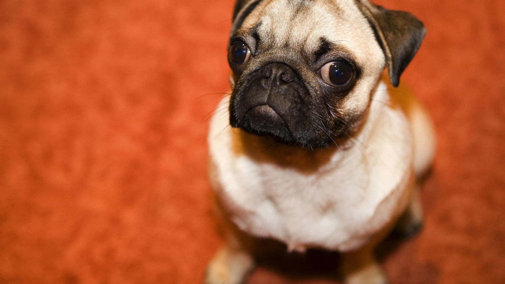

| Кот Барсик |
 |
Кот Барсик - живая иллюстрация жизни в стиле "хюгге". Посудите сами: он мягкий, уютный, прекрасный сам по себе! Барсик умеет радоваться простым вещам: пришли гости - бежит "бодаться" лбом о руки и проверять пакеты. Широкий подоконник - ура! Это и кровать,
и наблюдательный пункт и безопасный островок, если дети дают слишком много внимания. Залетел жук - юхххууу! Шоу началось, и солидный взрослый кот будет скакать за ним, как 6-килограмовый коник. Барсик кастрирован, приучен к лотку, здоров.
Хотите разделить с ним простые домашние радости? Тогда звоните!
|
| Пес Юзик |
 |
Воплощение верности и преданности - Юзик ищет дом! И если есть необыкновенные собаки, то Юзик один из них! Не просто послушный - он ловит каждое слово человека, не просто друг - а умный товарищ с огромным добрым сердцем, не просто собака -
сплетение самых лучших качеств! Чему ему учить? Он приучен к 2х разовому выгулу, поводку, квартире, Человеку. И учить не надо, лучше покажите как можете любить и его благодарность переполнит Ваш дом и жизнь! Звоните и наконец найдите своего
компаньона!
|
| Щенок Соня |
 |
Соня – залюбит, залижет, завиляет! Сонечка — очень милая собачка, с потрясающей мимикой, преданными глазами и презабавными ушками. Обожает человека, прекрасно ладит с детьми, любит общаться с другими собаками, спокойно относится к котам. Характер – просто
чудо. Совсем домашняя девочка, как охранник себя не оправдает ни разу. Ко всем относится доброжелательно-лизательно. Соня совсем молоденькая, около 50 см в холке, здорова, стерилизована, привита, приучена к 2-х разовому выгулу, дома терпит,
ничего не портит, в еде не привередлива. Если вам нужна собака-компаньон, друг для ребенка или подружка для вашей собаки, звоните не задумываясь! |
| Пес Винтик |
 |
Кучерявый ребенок Винтик с чудо-ушками и подпольной кличкой "Олененок"! О такой подруге должен мечтать каждый! На нее уж точно без улыбки не взглянуть, без тепла на сердце не уйти:) Любовь не купишь ни за какие коврижки! Да и зачем покупать, когда ее
Вам подарит чудо-Винтик! Именно эта девчушка будет Вашим самым лучшим другом, будет дарить Вам незабываемые моменты и наконец покажет Вам КАК надо любить! Винтик будет прекрасно себя чувствовать и в квартире, и в частном доме! Эта милашка
с детской мохнатостью вырастет не большой (около 50 см в холке), но очень умной и и красивой собакой! Спешите к своему счастью!
|